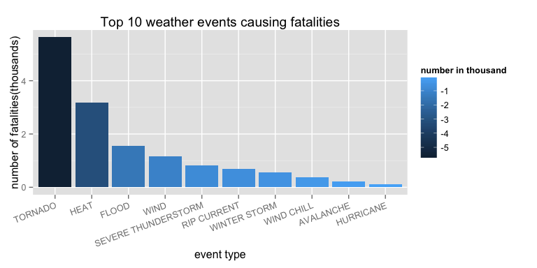
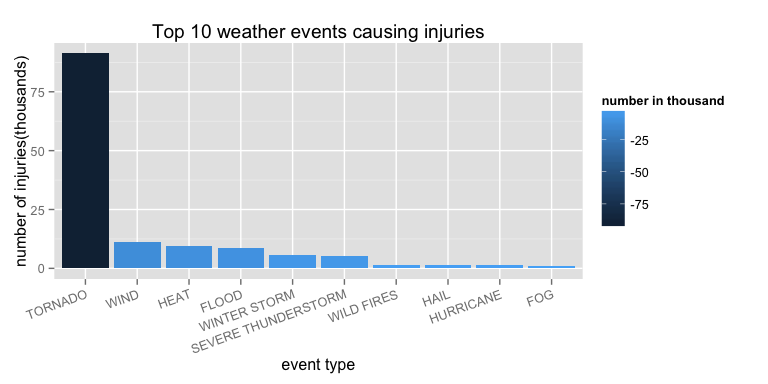
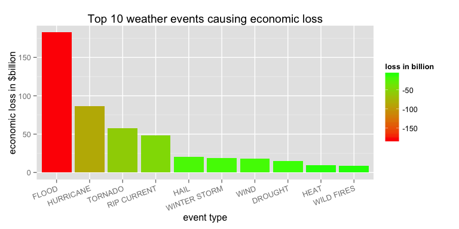

Reproducible Research Project2
EVTYPE variable includes many names which are similar with each other. We need to clean up them and merge the similar ones. But since there are hundreds of different event types names, it is a time costly work we clean one by one.
we will process "CROPDMGEXP" & "PROPDMGEXP" variables to numbers to calculate the economic damage loss of property and crop damage("CROPDMG" & "PROPDMG"). 'EXP' is regarded as exponent.Treated the exponent values in form of characters as follows:
library(downloader)
download("https://d396qusza40orc.cloudfront.net/repdata%2Fdata%2FStormData.csv.bz2", destfile = "StormData.csv.bz2")
storm <- read.csv("Stormdata.csv.bz2", stringsAsFactors = FALSE, header = TRUE)#select only the data related with "population health" and "economic consequences", store them to the new dataframe
storm1 <- storm[ , c("EVTYPE", "FATALITIES", "INJURIES", "PROPDMG", "PROPDMGEXP", "CROPDMG", "CROPDMGEXP")]please see Cleaning up data stratergies section part1 for instructions.
#calculate sum of fatalities number for each EVTYPE, store the values in dataframe *storm_fatal* .
library(plyr)
storm_fatal <- ddply(storm1,.(EVTYPE), summarize, sum_fatal = sum(FATALITIES))
#sort *storm_fatal* in decreasing order based on sum_fatal value and store in a new dataframe *fatal_order*.
fatal_order <- storm_fatal[order(storm_fatal$sum_fatal, decreasing = TRUE),]
#look up top 20 fatal_order data
h1 <- head(fatal_order, 20)
h1[order(h1$EVTYPE),]## EVTYPE sum_fatal
## 19 AVALANCHE 224
## 30 BLIZZARD 101
## 130 EXCESSIVE HEAT 1903
## 140 EXTREME COLD 160
## 141 EXTREME COLD/WIND CHILL 125
## 153 FLASH FLOOD 978
## 170 FLOOD 470
## 275 HEAT 937
## 278 HEAT WAVE 172
## 310 HEAVY SNOW 127
## 350 HIGH SURF 101
## 359 HIGH WIND 248
## 464 LIGHTNING 816
## 585 RIP CURRENT 368
## 586 RIP CURRENTS 204
## 676 STRONG WIND 103
## 760 THUNDERSTORM WIND 133
## 834 TORNADO 5633
## 856 TSTM WIND 504
## 972 WINTER STORM 206
make similar EVTYPE names be the same(only considering top20 EVTYPE for fatalities). EVTYPE names are changed based on the following rules
storm1$EVTYPE <- gsub("FLASH FLOOD|HEAVY RAIN", "FLOOD", storm1$EVTYPE)
storm1$EVTYPE <- gsub(".*HEAT","HEAT", storm1$EVTYPE)
storm1$EVTYPE <- gsub("HEAT WAVE","HEAT", storm1$EVTYPE)
storm1$EVTYPE <- gsub("EXTREME COLD","WIND CHILL", storm1$EVTYPE)
storm1$EVTYPE <- gsub("BLIZZARD|HEAVY SNOW|ICE STORM","WINTER STORM", storm1$EVTYPE)
storm1$EVTYPE <- gsub("RIP CURRENTS|HIGH SURF","RIP CURRENT",storm1$EVTYPE)
storm1$EVTYPE <- gsub("WINDS","WIND",storm1$EVTYPE)
storm1$EVTYPE <- gsub("(.*)WIND","WIND", storm1$EVTYPE)#calculate sum of injuries number for each EVTYPE, store the values in dataframe *storm_injur* .
storm_injur <- ddply(storm1,.(EVTYPE), summarize, sum_injur = sum(INJURIES))
#sort *storm_injur* in decreasing order based on sum_injur value and store in a new dataframe *injur_order*.
injur_order <- storm_injur[order(storm_injur$sum_injur, decreasing = TRUE),]
#look up top 20 injur_order data
h2 <- head(injur_order, 20)
h2[order(h2$EVTYPE),]## EVTYPE sum_injur
## 16 AVALANCHE 170
## 70 DENSE FOG 342
## 94 DUST STORM 440
## 121 FLOOD 8817
## 155 FOG 734
## 189 GLAZE 216
## 202 HAIL 1361
## 231 HEAT 9139
## 281 HURRICANE/TYPHOON 1275
## 330 LIGHTNING 5230
## 432 RIP CURRENT 681
## 601 TORNADO 91346
## 614 TROPICAL STORM 340
## 698 WILD FIRES 150
## 699 WILD/FOREST FIRE 545
## 701 WILDFIRE 911
## 704 WIND 11310
## 756 WIND CHILL 267
## 813 WINTER STORM 5122
## 836 WINTER WEATHER 398
make similar EVTYPE names be the same(only considering top20 EVTYPE for injuries). EVTYPE names are changed based on the following rules:
storm1$EVTYPE <- gsub("DENSE FOG", "FOG",storm1$EVTYPE)
storm1$EVTYPE <- gsub("WILD/FOREST FIRE|WILDFIRE", "WILD FIRES",storm1$EVTYPE)
storm1$EVTYPE <- gsub("WINTER WEATHER", "WINTER STORM",storm1$EVTYPE)
storm1$EVTYPE <- gsub("TROPICAL STORM","HEAT",storm1$EVTYPE)please see Cleaning up data stratergies section part2 for instructions.
#process CROPDMGEXP variable
storm1$CROPDMGEXP <- gsub("\\?", "NA", storm1$CROPDMGEXP)
storm1$CROPDMGEXP <- gsub("k|K", "3", storm1$CROPDMGEXP)
storm1$CROPDMGEXP <- gsub("m|M", "6", storm1$CROPDMGEXP)
storm1$CROPDMGEXP <- gsub("b|B", "9", storm1$CROPDMGEXP)
#process PROPDMGEXP variable
storm1$PROPDMGEXP <- gsub("\\?|\\+|\\-", "NA", storm1$PROPDMGEXP)
storm1$PROPDMGEXP <- gsub("h|H", "2", storm1$PROPDMGEXP)
storm1$PROPDMGEXP <- gsub("k|K", "3", storm1$PROPDMGEXP)
storm1$PROPDMGEXP <- gsub("m|M", "6", storm1$PROPDMGEXP)
storm1$PROPDMGEXP <- gsub("b|B", "9", storm1$PROPDMGEXP)
#change CROPDMGEXP & PROPDMGEXP values to numeric vectors
storm1$CROPDMGEXP <- as.numeric(storm1$CROPDMGEXP)## Warning: NAs introduced by coercion
storm1$PROPDMGEXP <- as.numeric(storm1$PROPDMGEXP)## Warning: NAs introduced by coercion
#calculate CROPDMG & PROPDMG loss for each event seperately(compute values as x * 10^exp value) and store the value on a new dataframe **ecoloss**.
ecoloss <- data.frame(prop_loss = storm1$PROPDMG*(10^storm1$PROPDMGEXP), crop_loss = storm1$CROPDMG*(10^storm1$CROPDMGEXP))
#calculate total loss of ROPDMG and PROPDMG (rowSums) for each event and add this column "total_loss" to *ecoloss*
ecoloss$total_loss <- rowSums(ecoloss, na.rm = TRUE)
#add EVTYPE column to ecoloss
ecoloss$EVTYPE <- storm1$EVTYPE
#calculate total loss for each EVTYPE, store the values in a new dataframe *storm_ecoloss*
storm_ecoloss <- ddply(ecoloss,.(EVTYPE), summarize, sum_eco = sum(total_loss))
#sort the EVTYPE in decreasing order based on sum_eco value and store the ordered data in a new dataframe *ecoloss_order*
ecoloss_order <- storm_ecoloss[order(storm_ecoloss$sum_eco, decreasing = TRUE),]
#look up top 20 ecoloss_order data
h3 <- head(ecoloss_order, 20)
h3[order(h3$EVTYPE),]## EVTYPE sum_eco
## 74 DROUGHT 1.502e+10
## 120 FLOOD 1.700e+11
## 143 FLOOD/SEVERE WEATHER 2.500e+09
## 178 FROST/FREEZE 1.104e+09
## 201 HAIL 1.876e+10
## 230 HEAT 9.307e+09
## 276 HURRICANE 1.461e+10
## 282 HURRICANE OPAL 3.192e+09
## 284 HURRICANE/TYPHOON 7.191e+10
## 333 LIGHTNING 9.425e+08
## 441 RIVER FLOOD 1.015e+10
## 455 SEVERE THUNDERSTORM 1.206e+09
## 514 STORM SURGE 4.332e+10
## 515 STORM SURGE/TIDE 4.642e+09
## 604 TORNADO 5.736e+10
## 696 WILD FIRES 8.793e+09
## 699 WIND 1.823e+10
## 751 WIND CHILL 1.372e+09
## 779 WIND, HAIL 1.602e+09
## 808 WINTER STORM 1.756e+10
make similar EVTYPE names be the same(only considering top20 EVTYPE for economic loss). EVTYPE names are changed based on the following rules:
storm1$EVTYPE <- gsub("FLOOD/SEVERE WEATHER|RIVER FLOOD","FLOOD",storm1$EVTYPE)
storm1$EVTYPE <- gsub("FROST/FREEZE", "WINTER STORM",storm1$EVTYPE)
storm1$EVTYPE <- gsub("HURRICANE/TYPHOON|HURRICAN OPAL", "HURRICANE", storm1$EVTYPE)
storm1$EVTYPE <- gsub("STORM SURGE|STORM SURGE/TIDE", "RIP CURRENT",storm1$EVTYPE)
storm1$EVTYPE <- gsub("WIND, HAIL","HAIL",storm1$EVTYPE)
storm1$EVTYPE <- gsub("LIGHTNING", "SEVERE THUNDERSTORM", storm1$EVTYPE)#repeat step 3.1
#calculate sum of fatalities number for each EVTYPE,
#sort EVTYPE in decreasing order based on sum_fatal value.
storm_fatal_revised <- ddply(storm1,.(EVTYPE), summarize, sum_fatal = sum(FATALITIES))
fatal_order_revised <- storm_fatal_revised[order(storm_fatal_revised$sum_fatal, decreasing = TRUE),]
#selet only top 10 rows and change the unit of fatalities number to "thousand".
fatal_top <- fatal_order_revised[1:10,]
fatal_top$sum_fatal <- fatal_top$sum_fatal/1000
fatal_top## EVTYPE sum_fatal
## 595 TORNADO 5.633
## 227 HEAT 3.187
## 120 FLOOD 1.548
## 690 WIND 1.165
## 440 SEVERE THUNDERSTORM 0.816
## 422 RIP CURRENT 0.697
## 798 WINTER STORM 0.556
## 742 WIND CHILL 0.380
## 16 AVALANCHE 0.224
## 273 HURRICANE 0.125
#repeat step 3.3
#calculate sum of injuries number for each EVTYPE,
#sort EVTYPE in decreasing order based on sum_injur value.
storm_injur_revised <- ddply(storm1,.(EVTYPE), summarize, sum_injur = sum(INJURIES))
injur_order_revised <- storm_injur_revised[order(storm_injur_revised$sum_injur, decreasing = TRUE),]
##selet only top 10 rows and change the unit of injurises number to "thousand".
injur_top <- injur_order_revised[1:10,]
injur_top$sum_injur <- injur_top$sum_injur/1000
injur_top## EVTYPE sum_injur
## 595 TORNADO 91.346
## 690 WIND 11.310
## 227 HEAT 9.479
## 120 FLOOD 8.819
## 798 WINTER STORM 5.520
## 440 SEVERE THUNDERSTORM 5.230
## 687 WILD FIRES 1.606
## 198 HAIL 1.361
## 273 HURRICANE 1.321
## 152 FOG 1.076
#repeat step 3.6
#calculate CROPDMG & PROPDMG loss for each event seperately(compute values as x * 10^exp value) and store the value on a new dataframe *ecoloss_revised*.
ecoloss_revised <- data.frame(prop_loss = storm1$PROPDMG*(10^storm1$PROPDMGEXP), crop_loss = storm1$CROPDMG*(10^storm1$CROPDMGEXP))
#add ROPDMG and PROPDMG(rowSums) together for each event and add this column to *ecoloss_revised*
#add EVTYPE column to ecoloss_revised
ecoloss_revised$total_loss <- rowSums(ecoloss_revised, na.rm = TRUE)
ecoloss_revised$EVTYPE <- storm1$EVTYPE
#calculate total economic loss for each EVTYPE and sort in decreasing order.
storm_ecoloss_revised <- ddply(ecoloss_revised,.(EVTYPE), summarize, sum_eco = sum(total_loss))
ecoloss_order_revised <- storm_ecoloss_revised[order(storm_ecoloss_revised$sum_eco, decreasing = TRUE),]
#select only top 10 rows, and change the unit of ecoloss to $billion. store value in dataframe *top_ecoloss*
ecoloss_top <- ecoloss_order_revised[1:10,]
ecoloss_top$sum_eco <- ecoloss_top$sum_eco/10^9
ecoloss_top## EVTYPE sum_eco
## 120 FLOOD 182.640
## 273 HURRICANE 86.524
## 595 TORNADO 57.362
## 422 RIP CURRENT 48.055
## 198 HAIL 20.364
## 798 WINTER STORM 18.661
## 690 WIND 18.230
## 74 DROUGHT 15.019
## 227 HEAT 9.307
## 687 WILD FIRES 8.793
make plots(fatal_top, injur_top) to show the Top 10 most harmful event types (as indicated in the EVTYPE variable) with respect to population health across the United States
library(ggplot2)
g <- ggplot(fatal_top, aes(EVTYPE, sum_fatal))
plot_fatal <- g + geom_histogram(stat = "identity")+aes(fill = -sum_fatal, reorder(EVTYPE, -sum_fatal))+scale_fill_gradient("number in thousand") + labs(x = "event type", y = "number of fatalities(thousands)", title = "Top 10 weather events causing fatalities") + theme(axis.text.x = element_text(angle=20, hjust=1))
print(plot_fatal)
g <- ggplot(injur_top, aes(EVTYPE, sum_injur))
plot_injur <- g + geom_histogram(stat = "identity")+aes(fill = -sum_injur, reorder(EVTYPE, -sum_injur))+scale_fill_gradient("number in thousand") + labs(x = "event type", y = "number of injuries(thousands)", title = "Top 10 weather events causing injuries") + theme(axis.text.x = element_text(angle=20, hjust=1))
print(plot_injur)
make plots(ecoloss_top) to show the Top 10 most harmful event types (as indicated in the EVTYPE variable) with respect to economic loss across the United States
g <- ggplot(ecoloss_top, aes(EVTYPE, sum_eco))
plot_ecoloss <- g + geom_histogram(stat = "identity")+aes(fill = -sum_eco, reorder(EVTYPE, -sum_eco))+scale_fill_gradient("loss in billion", low = "red", high = "green") + labs(x = "event type", y = "economic loss in $billion", title = "Top 10 weather events causing economic loss") + theme(axis.text.x = element_text(angle=20, hjust=1))
print(plot_ecoloss)